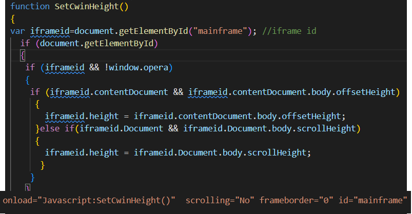

這次的專題中,在使用動畫時,碰到了許多困難,即使上網找了很多資料,仍然知之甚少. 觀看網路上的範例,和自己實作起來,發現完全不照邏輯跑. 所以我認為在動畫的部分牽扯的東西可能很多,但我現在仍不了解,只能把了解的部分應用在這次專題上
transition: all 0.5s ease-in-out;
以這個範例來說,第一個參數all 代表套用到所有的元素上,當然可以指定特定的元素. 再來第二個參數0.5s為完成整個動畫的時間, 最後一個參數為這個動畫跑的方法
transition-duration: 0.7s;
這個方法可以另外指定動畫要跑的時間,對於共用同一個動畫變數,但是執行時間不同時可以應用到
transform-origin: left;
這個方法可以設定動畫的起始位置,對於發揮動畫的創意來說非常有用,像這次我在nav利用hover呼叫了underline的動畫,並由左開始跑
這次的專題中,很多時候,會被絕對位置,相對位置搞得頭很痛,因為一開始理解的和實際上網頁所判讀的不一樣.最後多次測試才發現,原來相對和絕對,只跟父層比較,後來寫的時候,就比較順暢了
position: absolute;
絕對位置,相對於父層的框架,起始位置為top:0 left:0
position: relative;
這部分的理解就不太確定是不是完全正確,但目前寫下來邏輯並沒有問題, 相對位置的部分也是相較於父層,但起始位置會在他沒有設定位置時,應該出現的位置. 通常設置這個相對位置,都是為了子層的絕對位置座標較好設定
position: fixed;
fixed不受任何框架影響,並且永遠顯示在指定的座標上,例如我右上角的link就是利用fixed
下拉式選單是應用在nav中,資料量較大的頁面,會使用下拉式選單去分類,這個靈感是在老師在教手機響應式sidebar時,突然想到的.但是在實作上碰到許多困難,然而在網路上查到display:inline-block時,才成功實做出來
display: inline-block;
字面上的理解就是,這行字裡面包含了一個區塊,再利用hover移動到連結上時,改變display
block display:none
這個block的部分初始化為none,並利用hover到連結時顯示這個區塊
block hover-> display:flex
這個就是下拉式選單能夠實作的關鍵.做完上面兩個步驟時,當滑鼠移動到下拉式選單上,會直接消失,因為display又變成none,所以移動要拉下式選單上時,直接改變下拉式選單
上課教到sidebar時,有教到closebtn和navbtn,我在看很多網站上的sidebar開關,其實都是在同一個位置,而且很多都是從上面滑下來,所以這邊我也想這樣去做
display:none <-> display:block
其實就是把兩個display做交換,兩個btn都是在同一個位置,也長的一樣,這樣視覺上就是同一個按鈕
JS:closeBtn.style.display document.getElementById
實作這個功能時,突然發現,css目前教到的事件並不能在按下一個按鈕時,去改變另外一個按鈕的style,於是上網查找資料,研究了一下js裡面的click事件和getElementById(如果用class選擇,並不能去改變style),利用讀到按鈕的變數裡面的style.display去檢查誰是none誰是block 以此去做交換
JS:resize
當時做到上面這個步驟以為完成了,但是在測試的過程中,發現如果只要Btn出現了,同時又放大畫面,那按鈕並不會消失,所以就去查詢js的語法中,有沒有監聽畫面大小的事件,後來發現有resize這個方法可以選,並使用window.outerWidth這個方法,藉由回傳畫面大小,去偵測是否需要按鈕,如果畫面夠大,把兩個按鈕都變成none
這個部分就是討論Breakpoint怎麼設定的,由於我在寫這個網站時,每個頁面由於寫的時期不同,根據上課內容的進步,排版,格式等等彈性的幅度也完全不一樣,所以在設定斷點時,我是分別每個網頁去用檢查工具慢慢試出來的,並挑選自己認為最不影響外觀的情況下去設定.於是每個網頁的斷點是完全不同的
當然,最大值的部分都是以平板,手機的通用格式去設定, 切換手機平板的尺寸一定要大於手機平板的尺寸,在達到設備最大寬度前,就先更換排版
上課的時候就已經有頻繁的在js中使用iframe的概念,去將其他頁面塞入目前的頁面,但是在實際操作時,是有碰到困難的,iframe不只有很醜的框線,而且資料太多還有卷軸,非常難看,於是在上網查找資料時,在js中,解決了這一點
簡而言之,就是利用函式呼叫,來把頁面高度變成卷軸高(如果有需要),並且利用iframe本身的參數去把卷軸和框線大小變成0
display總共用到了五種方法,包括block none grid flex inline-block
block
顯示為一個方塊,相對於父層這個顯示方式可以充滿彈性
none
不顯示
grid
可以讓每個元素橫向排列,並根據不同寬度去響應式的指定區塊應該要有幾個欄位
flex
直向排列,有些物件初始化會以橫向排列,例如文字,那我們就需要用到這個(如下拉式選單中的文字容器),把它改成直的
inline-block
這個上面介紹過,用在下拉式選單,非常好用
這學期的網頁設計課程,可以說是非常充實,也是眾多課程中,我認為學到最多東西的一堂課. 本來我對於網頁設計,撇除國小的Frontpage後,可以說是毫無基礎. 但是在經過一個學期的學習後,雖然不能說是非常得心應手,畢竟光是整個頁面的設計感,或是整個css的嚴謹度,又或是一些觀念的一知半解, 但也算是可以設計出一個勉強可以算得上有排版的網頁了.
在這次的專題,由於我預期完成會花費非常久的時間,甚至會影響到其他科目的期末考,於是我乾脆把大部分的內容(作品集的部分),都塞入期末筆記,並藉由這些內容去設計排版. 由於我的時間非常零碎,加上每個時期的課程進度不同,對於排版的想法,實作的程度也不盡相同,於是造成後續css在改動時,常常出現牽一髮動全身的情形,我也必須慢慢地去把css整理成通用的css. 雖然最後整理不完,但是比起一開始的樣子已經好很多了.
在這堂課程中,最大的收穫除了獲得知識本身,我認為最大的收穫是激起學習欲望,並對於下學期的動態網頁非常期待. 尤其這次上網找了許多資料後,js可以給予整個網頁設計有更大的想像. 且自己本身對於後端的部分是更有興趣,版面設計並不是自己所擅長,這個我非常理解. 希望在下學期的課程中,獲得更多關於網頁設計的知識,並且希望在學期動態網頁時,可以寫的更如魚得水. 最後感謝老師這一學期的教導!